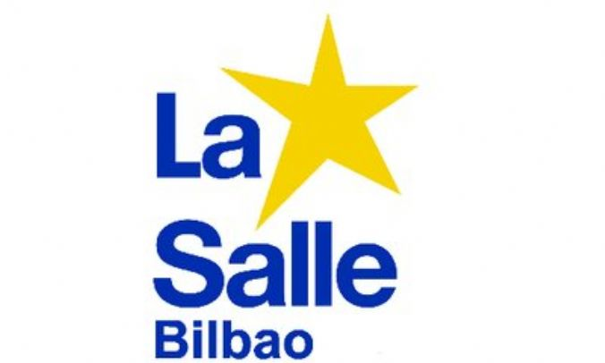
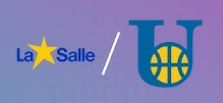

Garaitu gabeko talde
LaSalle da orain arte garaitu gabe dagoen talde bakarra, guztira 120 puntuko aldearekin. Asteburu honetan ligako bigarren postuan dagoen Unamuno taldearen aurka jokatuko dute. Lortuko al dute bolada mantentzea?


LaSalle da orain arte garaitu gabe dagoen talde bakarra, guztira 120 puntuko aldearekin. Asteburu honetan ligako bigarren postuan dagoen Unamuno taldearen aurka jokatuko dute. Lortuko al dute bolada mantentzea?
Iker Aguirre, denek hizpide duten jokalaria. Bere jokatzeko denborari erreparatuta, hiruko jaurtiketa portzentajerik altuena du. Gaur egun, Ibaizabal taldean jokatzen ari da, ligako hirugarren postuan dagoena. Bere hiruko magikoek bere taldea aintzara eramango al dute?

LaSalle eta Unamuno aurrez aurre arituko dira eguneko partidan, zirrara, intentsitatea eta joko bikaina agintzen dituen duelu batean. Bi taldeak inor axolagabe utziko ez duen partida batean ikuskizuna emateko irrikitan egongo dira. Nork eramango du etxera liga titulua?